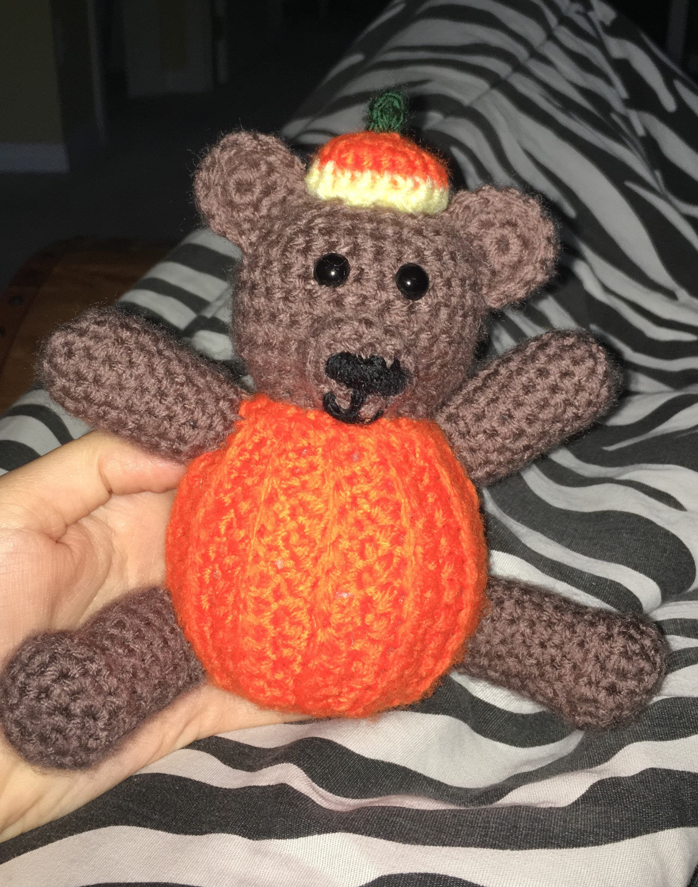
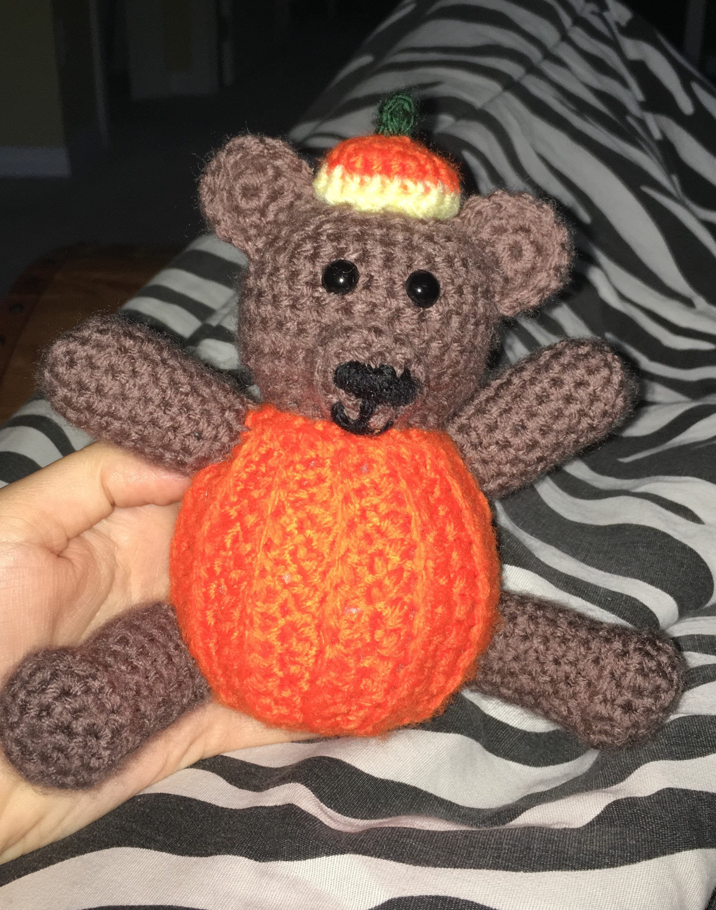

Bienvenue à mon premier site! J'ai très hâte à paratger mes projets de crochetage avec vous!
Je m'appelle Magalie Chinchilla Chaput et j'adore crocheter comme passe-temps. Je crochet souvent des projets pour ma famille, mes amis et moi-même. Si vous êtes (ou devenez) un fanotique du crochet et de la laine comme moi, continuez à lire pour apprendre au sujet de mes expériences!

Cette laine est superbe et offre une bonne variété de tailles, couleurs, et textures. Bernat Velvet est plus mince comme taille mais offre une finition brillante ce qui est très unique et beau. Bernat Blanket est parfait lorsqu'on construit une couverte. Elle est extrêmement douce et très épaisse. Les projets grandissent très rapidement avec une laine aussi épaise que Bernat Blanket.
Lionbrand est une laine de très bonne qualité. Elle offres plusieurs groupes de couleurs, ainsi que plusieurs couleurs plutôt froides. Leur site web est très facile à naviguer, il permet aussi l'achat de collections de couleurs créées par eux pour faciliter l'expérience du client!
Red Heart est parfait pour des petits toutouts. Elle est douce et facile à travailler. Les pointes sont très faciles à distinguer grâce à la minceur de la laine ce qui est bon pour les débutants. Red Heart offre une bonne diversité de couleurs très vives et brillantes. De plus, elle est très abordable.
Semblable à Bernat Blanket, Sweet Snuggles est une compagnie de laine très épaisse et très douce. Elle est une taille de plus grande et incroyablement comfortable. Les pointes sont moins faciles à voir mais je suis en amour avec les résultats de projets utilisant cette laine tels que des couvertes et des toutouts.
C'est grâce à une enseigante en 6ième année que j'ai apris à crochter dans le Club de Tricot. J'ai tout essayé, que ce soit du tricot, du crochet et même le tricotin! Je n'avais pas rélisé l'impacte qu'aurait le crochet dans ma vie au futur. Depuis, ce n'est que récement que j'ai véritablement trouvé une passion pour le crochet.
Aujourd'hui, je crochète pleins de projets de toutes sortes tels que des toutouts, des couvertes, des coussins et plus! C'est ma méthode préférée afin de diminuer mon strèsse, me relaxer et m'amuser.
Cependant, tout le monde a certains projets qu'il maîtrise mieux que d'autres. Pour moi, ce projet est l'amigurumi. Pour ceux qui ne connaissent pas ce terme, l'amigurumi est un mot qui signifit "l'art japonais du du tricot ou crochet de petits animaux et de créatures anthropomorphes" (Wikipédia, janvier 2020).C'est super adorable. Pour cette raison j'adore créer des minis créatures tels que des bonhommes de neiges, des avocats, des méduses, et mêmes du mais sur un épi! Les possibilités sont infinies!


 
Je me suis amusé beaucoup à créer mon premier site web grâce au language HTML (Hyper Text MarkUp Language). C'était assez facile une fois que j'ai fini les cours offerts par CodeCademy. Cependant, je crois qu'il est évident que j'ai eu de la misère avec mes photos de projets. Je suis incertaine comment changer leur taille (certaines sont immenses ce qui me dérange énormement. Aussi, j'ai au moins une photo qui ne sont pas visible sur mon site même si je les aies bien inscrits dans Brackets ou soit que le système ne reconnait pas la photo même si elle est dans le même fichier. Mais autrement, j'ai apprécié cette expérience et j'ai hâte à continuer à m'améliorer!